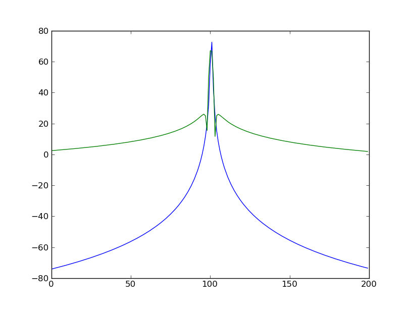
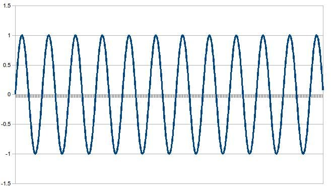
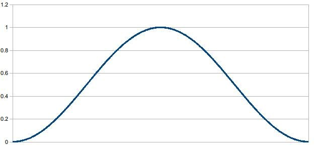
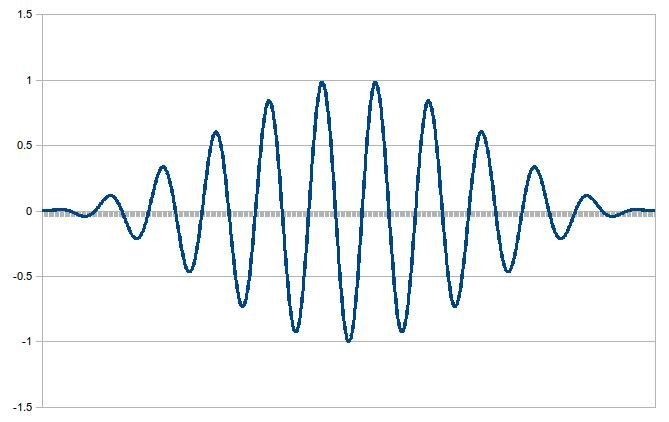
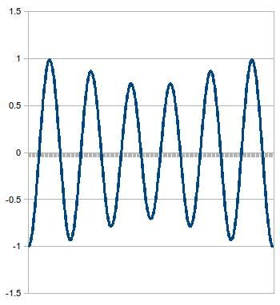
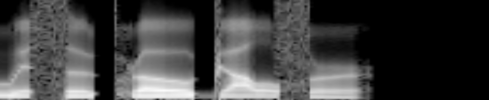
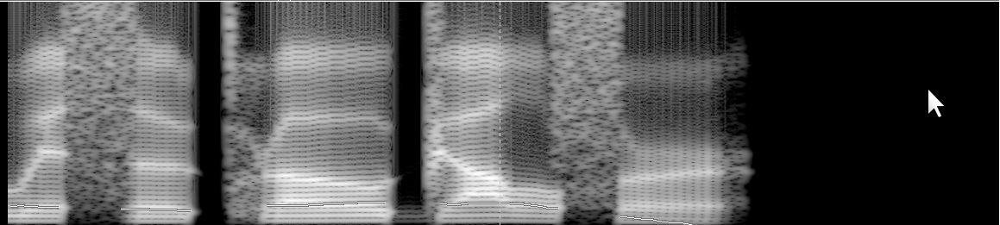
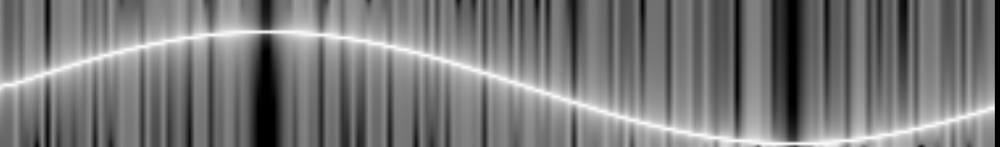

By Bill Cox, waywardgeek@gmail.com
Intuitively, a Time-Aliased-Hann window is a sound sample that starts playing in the middle, and slowly fades to zero, while at the same time we start playing samples from beginning and slowly fade in. It is a waveform that smoothly feeds into itself. If the signal is a single pitch period of a harmonic signal, like a voice or a single note of an instrument, then this signal can be played over and over, and will sound like the note has been extended indefinitely, without noticeable distortion. This exact algorithm is commonly used in time-domain techniques used in the TD-PSOLA class of algorithms. I wrote a Linux package called "sonic", which is used for speeding up speech, and which is particularly good at low distortion for speeds of 2X and up. It's basically PICOLA, but with a new algorithm that kicks in at 2X and above. Such an algorithm is needed for improving existing text-to-speech engines to provide very high speed speech for blind speed listeners. After trying various FFT and TD-PSOLA based methods, I found that PICOLA produces far less distortion in sped up speech, even compared to the popular WSOLA algorithm, and so I investigated why that is so. The answer seems to be that the pitch synchronous overlap-add step produces no spectral distortion of harmonics, and little distortion of everything else. So, I felt it might work well as a pre-process to an FFT, especially if the FFT frames are single pitch periods. I was amazed with the results.
DSP algorithms developers often use window functions such as the popular Hamming window to reduce spectral leakage in their FFTs.
So far as I know, none of this is new, with the possible exception of applying Time-Aliased-Hann pitch synchronously to speech. A response on comp.dsp was so informative, I think its worth reposting as-is here:
It's always nice to see someone new rediscover the advantages of the independence of window size from DFT size. The approach is not new. It can be found in a number of guises.
It has long been used as one form of FFT based polyphase filter. For examples: "polyphase DFT filterbank", "PolyDFT" and "PFT" as used in places such as: http://www.rfel.com/download/W03006-Comparison_of_FFT_and_PolyDFT_Transient= _Response.pdf
Fred Harris presents the concept in the 'Time Domain Signal Processing with the DFT' chapter in Doug Elliot=92s 1987 book Handbook of Digital Signal Processing. He considers the name "data-wrapping" but considers that too close to the context of "wrapping" in "phase unwrapping" and suggests "data folding" instead.
A couple more terms approaching yours are "weighted overlap-add structure" or "windowed-presum FFT" from "Understanding Digital Signal Processing, Second Edition" by Richard G. Lyons as explained in: http://www.eetimes.com/design/embedded/4007611/DSP-Tricks-Building-a-practi= cal-spectrum-analyzer
The most complete exposition on it that I have found comes in a 300+ page opus: TIME ALIASING METHODS OF SPECTRUM ESTIMATION by Jason F Dahl A dissertation submitted to the faculty of Brigham Young University, Dept. of Mechanical Engineering, April 2003. 305pp Available at: http://contentdm.lib.byu.edu/ETD/image/etd157.pdf
I personally prefer Dahl's "time aliasing" as having the least conflict with other uses of the component words.
This literature provides comparisons to other windows and window design methods.
Dale B. Dalrymple
Having now read these papers, and Jason Dahl's dissertation, I feel I have a much better understanding of time-aliased techniques and their applications. The pitch synchronous time-aliased FFT with a low leakage window like a Hanning window is excellent for speech analysis.
Applying a Time-Aliased-Hann window is done by first applying a Hann window to two adjacent FFT input frames, and then adding the first frame to the second. This second step is described in various "time aliasing" techniques for DFTs, and in general is not restricted to two frames, but can be any number of input frames. However, for pitch synchronous speech processing, exactly two pitch periods works quite well. More frames make the time resolution too poor. Given two frames worth of input samples, x(n), n = 0 .. 2*N - 1, we compute the windowed samples x'(n), n = 0 .. N - 1:
w(n) = (1 - cos(pi*n/N))/2, n = 0 .. 2*N - 1.
x'(n) = w(n)*x(n) + w(n + N)*x(n + N), n = 0 .. N - 1
Here is a plot of worst-case spectral noise for Hamming windows vs Time-Aliased-Hann windows, at about 1KHz:

This plot was created using time_aliased_hann.py and hamming_py. This plot basically shows that we should not use Hamming windows for speech spectrograms, as is commonly done. The spectral noise is too high for high dynamic range spectrograms like these. Hann windows work better. The Time-Aliased-Hann window is exactly the same as a normal FFT response of a Hann-windowed sample of 2 pitch periods, but we drop every other frequency bin, keeping only harmonics of the fundamental pitch.
Let's see an example. In this case, we're using a frame size of 500. The input signal is a worst case for Time-Aliased-Hann: 5.75 sine wave cycles per frame, neither harmonic, or anti-harmonic, but exactly in between. Here's two frames worth of input data:

We apply a Hann window function to two frames, or 1000 samples. Here's what a Hann function looks like:

We multiply the Hann function onto the input signal to get:

Finally, we take the first 500 samples and add them to the second 500 samples to get our 500 sample Time-Aliased-Hann result:

Highly harmonic signals like voiced speech have repeating wave forms that slowly evolve over time. By detecting two similar adjacent pitch periods, with an algorithm like AMDF, we can significantly reduce noise in the FFT. One property of Time-Aliased-Hann FFTs is that 100% of all harmonic energy goes to the correct FFT bin, with no leakage. This makes it especially good for analyzing speech, since voiced speech is highly harmonic.
Here is a spectrogram of the phrase With the pro golfer, generated with the voxin TTS engine:

Here is the same sound analyzed using Praat, with a short-time FFT using Hamming windows.

An important benefit of the pitch synchronous Time-Aliased-Hann technique is computational efficiency. The Praat spectrogram was made using 1000 500-sample FFTs. The Time-Aliased-Hann version was done with only 163 FFTs, of an average of 98 points each. Since frame size vary, and are short, result frames were scaled to 200 points using linear interpolation. This is roughly a 40X speed improvement, assuming FFTs are O(N*log2(N)). Also, the artifacts created by pitch periods entering and leaving the Hamming window are gone. Notice the vertical and horizontal lines in the spectrogram above. These are essentially noise that make it harder to match spectrograms for speech recognition. The better spectral resolution and low noise makes matching spectrograms a reasonable approach to speech recognition.
The Time-Aliased technique can be applied with any window function, not just Hann. However, I find window functions with the following property give better results:
w(n) + w(n + N) = constant, n = 0 .. N - 1
This is a bit more restrictive than the "weak COLA" constraint. This property insures that all pure harmonics of the fundamental pitch are exactly represented in the correct frequency bin with no leakage. Other window functions that have this property are Triangle and Blackman windows. Time-Aliased-Triangle has considerably more spectral noise, but still far less than traditional Triangle windows. Time-Aliased-Blackman windows have lower spectral leakage than Time-Aliased-Hann, with just a bit more complexity.
The same voxin sample above generates this spectrogram with Time-Aliased-Blackman. It seems about the same to me.
These three spectrograms are of a time-varying sine wave, showing spectral leakage for Time-Aliased-Triangle, Time-Aliased-Hann, and Time-Aliased-Blackman. They are generated with 100 point Time-Aliased-FFTs, and plotted with 70 DB dynamic range (0 is 70 DB below the peak value). As above, results are scaled to 200 points with linear interpolation. The frequency varies from 100 Hz to 4 KHz over a 2 second time frame.
Time-Aliased-Triangle
Time-Aliased-Hann
Time-Aliased-Blackman
Note that these signals are not harmonics of the frame rate. If they had been, there would be no leakage at all.
For comparison, here's the same signal analyzed the same way, but with a traditional rectangle window in the first image, a traditional Hann window in the second, and a traditional Hamming window in the third:

Traditional rectangle window
Traditional Hann window
Traditional Hamming window
For both speech synthesis and recognition, common practice is to use LPC (Linear Predictive Coding) based analysis rather than directly matching FFTs. LPC is essentially a model order reduction method, and is lossy. Popular TTS engines based on the MBROLA algorithm family all sound "tinny", though I have come to think of this distortion as "LPC-ish". Speech recognition algorithms often reduce a spectrogram to 25 "Mel scale" frequency bins, losing much of the clarity of the signal. In both cases, computational efficiency is a key driver. With the improved clarity and computational efficiency of Time-Aliased-Hann FFTs, it should be possible to significantly reduce distortion in TTS engines, while improving accuracy in speech recognition engines.
Let the input signal x be a sine wave defined as:
x(n) = cos(2*pi*f*n/fs + p), n = 0 .. 2*N - 1,
where f the frequency, fs is the sample rate, p is the phase, and and N is the window length. We're interested in harmonics, which occur at frequencies:
f = m*fs/N, m an integer >= 1
Rewriting x(n):
x(n) = cos(2*pi*(m*fs/N)*n/fs + p)
= cos(2*pi*m*n/N + p)
The windowed frame, x'(n), is:
w(n) = (1 - cos(pi*n/N))/2, n = 0 .. 2*N - 1.
x'(n) = (1 - cos(pi*n/N))*x(n)/2 + (1 - cos(pi*(n + N)/N))*x(n + N)/2
= (1 - cos(pi*n/N))*cos(2*pi*m*n/N + p)/2 +
(1 - cos(pi*(n + N)/N))*cos(2*pi*m*(n + N)/N + p)/2
= (cos(2*pi*m*n/N + p) + cos(2*pi*m*(n + N)/N + p))/2
- (cos(pi*n/N)*cos(2*pi*m*n/N + p) + cos(pi*(n + N)/N)*cos(2*pi*m*(n + N)/N + p))/2
= (cos(2*pi*m*n/N + p) + cos(2*pi*m*n/N + p + 2*pi*m))/2
- (cos(pi*n/N)*cos(2*pi*m*n/N + p) + cos(pi*(n + N)/N)*cos(2*pi*m*(n + N)/N + p))/2
Since cos(a)*cos(b) = cos(a + b)/2 + cos(a - b)/2,
x'(n) = (cos(2*pi*m*n/N + p) + cos(2*pi*m*n/N + p + 2*pi*m))/2
- (cos(2*pi*m*n/N + p + pi*n/N) + cos(2*pi*m*n/N + p - pi*n/N)
+ cos(2*pi*m*(n + N)/N + p + pi*(n + N)/N)
+ cos(2*pi*m*(n + N)/N + p - pi*(n + N)/N))/4
x'(n) = (cos(2*pi*m*n/N + p) + cos(2*pi*m*n/N + p + 2*pi*m))/2
- (cos((n/N)*(2*pi*m + pi) + p) + cos((n/N)*(2*pi*m - pi) + p)
+ cos((n/N)*(2*pi*m + pi) + p + 2*pi*m + pi)
+ cos((n/N)*(2*pi*m - pi) + p + 2*pi*m - pi))/4
Using cos(a +/- pi) = -cos(a):
x'(n) = (cos(2*pi*m*n/N + p) + cos(2*pi*m*n/N + p + 2*pi*m))/2
- (cos((n/N)*(2*pi*m + pi) + p) + cos((n/N)*(2*pi*m - pi) + p)
- cos((n/N)*(2*pi*m + pi) + p + 2*pi*m)
- cos((n/N)*(2*pi*m - pi) + p + 2*pi*m))/4
Now, assuming m is an integer >=1, then cos(a + 2pim) = cos(a):
x'(n) = (cos(2*pi*m*n/N + p) + cos(2*pi*m*n/N + p))/2
- (cos((n/N)*(2*pi*m + pi) + p) + cos((n/N)*(2*pi*m - pi) + p)
- cos((n/N)*(2*pi*m + pi) + p)
- cos((n/N)*(2*pi*m - pi) + p))/4
= cos(2*pi*m*n/N + p)
= x(n)
Thus, x'(n) = x(n), and as with a rectangle window, the FFT will have only one non-zero value, at m. So, harmonic energy does not leak at all.
For anti-harmonics, at frequencies where m is a positive integer + 1/2:
x'(n) = (cos(2*pi*m*n/N + p) + cos(2*pi*m*n/N + p + pi))/2
- (cos((n/N)*(2*pi*m + pi) + p) + cos((n/N)*(2*pi*m - pi) + p)
- cos((n/N)*(2*pi*m + pi) + p + pi)
- cos((n/N)*(2*pi*m - pi) + p + pi))/4
x'(n) = (cos(2*pi*m*n/N + p) - cos(2*pi*m*n/N + p))/2
- (cos((n/N)*(2*pi*m + pi) + p) + cos((n/N)*(2*pi*m - pi) + p)
+ cos((n/N)*(2*pi*m + pi) + p)
+ cos((n/N)*(2*pi*m - pi) + p))/4
x'(n) = - (cos((n/N)*(2*pi*m + pi) + p) + cos((n/N)*(2*pi*m - pi) + p)/2
This is 1/2 times a sine wave in the bin before f, plus 1/2 times a sine wave in the bin after f. Thus, anti-harmonics also have no leakage.